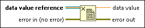

Delete Data Value Reference Function
Owning Palette: Memory Control VIs and Functions
Requires: Base Development System
Removes LabVIEW access to the data that the data value reference or the external data value reference points to. This function deletes the reference but leaves the data intact. Memory leakage might occur if you do not delete the reference.
 | Note You must use this function to delete an external data value reference and release the associated memory to the device driver that supports and provides the reference; otherwise, the hardware does not have access to that buffer space. |

 Add to the block diagram Add to the block diagram |
 Find on the palette Find on the palette |